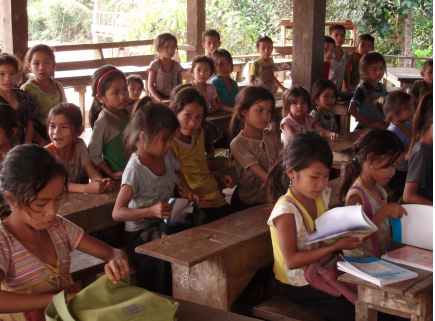

Escolaridade
Cerca de 18% dos jovens de 14 a 29 anos de idade no Brasil, equivalente a quase 52 milhões de pessoas, não completaram o ensino médio, ou porque abandonaram, ou porque nunca frequentaram a escola.
A falta de escolaridade no Brasil, muitas vezes, é um reflexo direto da pobreza que assola grande parte da população. Nas regiões mais carentes do país, o acesso à educação de qualidade é frequentemente limitado, seja pela falta de estrutura das escolas, pela ausência de recursos adequados ou pela necessidade premente de trabalhar desde cedo para contribuir com a renda familiar
Além disso, a falta de acesso à educação de qualidade contribui para a reprodução da pobreza, pois sem uma base educacional sólida, é difícil escapar do ciclo de baixa renda. As oportunidades de emprego e de ascensão social ficam cada vez mais distantes, resultando em uma sociedade marcada pela desigualdade e pela injustiça social.
É fundamental que políticas públicas eficazes sejam implementadas para combater esse problema estrutural. Investimentos em educação de qualidade, programas de assistência social e iniciativas de inclusão são essenciais para romper o ciclo da pobreza e garantir que todas as crianças e jovens brasileiros tenham acesso a oportunidades iguais de desenvolvimento e crescimento pessoal.

A busca por uma educação de qualidade é um dos pilares fundamentais para o progresso de uma sociedade. No entanto, apesar dos avanços alcançados, ainda há diversos desafios a serem superados para garantir que todos os alunos tenham acesso a uma educação de excelência. Nesta redação, exploraremos algumas das áreas-chave que podem ser aprimoradas para promover uma educação escolar mais eficaz e significativa.
Em primeiro lugar, é crucial destacar a importância do investimento adequado na educação. Escolas bem financiadas têm a capacidade de oferecer recursos essenciais, como materiais didáticos atualizados, instalações adequadas e tecnologia de ponta. Além disso, um financiamento adequado permite a contratação e a retenção de professores qualificados, que desempenham um papel central no sucesso educacional dos alunos.